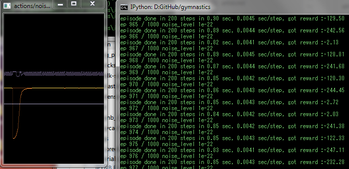
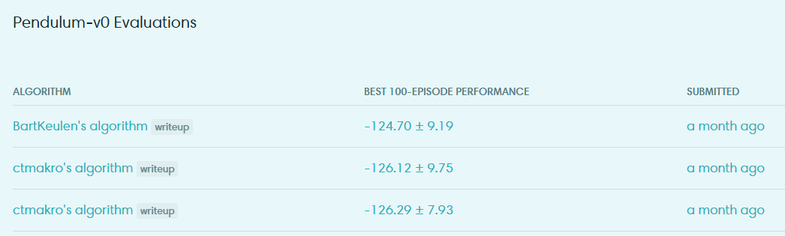

Paper's here: https://arxiv.org/pdf/1509.02971.pdf
Basically you have two network, one called the actor, another critic.
In DDPG the actor perform a deterministic policy (given input, the output is not a probabilistic distribution, but a value). We let the critic to judge how good did the actor do; then the actor can use this information to improve its policy. The problem then become: how can we train such a network in Keras?
Of course you can't. For my own convenience I wrote a small library called
canton. Check https://github.com/ctmakro/canton for more details.
Define the inputs: (state, action, reward, done?, next-state)
s1 = tf.placeholder(tf.float32,shape=[None,self.inputdims])
a1 = tf.placeholder(tf.float32,shape=[None,self.outputdims])
r1 = tf.placeholder(tf.float32,shape=[None,1])
isdone = tf.placeholder(tf.float32,shape=[None,1])
s2 = tf.placeholder(tf.float32,shape=[None,self.inputdims])
Train the critic by minimizing the MSE loss between predicted Q and calculated Q (using Temporal-Difference):
a2 = self.actor_target(s2)
q2 = self.critic_target([s2,a2])
q1_target = r1 + (1-isdone) * self.discount_factor * q2
q1_predict = self.critic([s1,a1])
critic_loss = tf.reduce_mean((q1_target - q1_predict)**2)
Train the actor by maximizing the expected reward:
a1_predict = self.actor(s1)
q1_predict = self.critic([s1,a1_predict])
actor_loss = tf.reduce_mean(- q1_predict)
You may have noticed that there are two network called "actor_target" and "critic_target". They are copies of actor and critc, with their weights slowly gradually updated from actor and critic (to reduce action-sample correlation thus stabilize learning).
tau = tf.Variable(0.001)
aw = self.actor.get_weights()
atw = self.actor_target.get_weights()
cw = self.critic.get_weights()
ctw = self.critic_target.get_weights()
shift1 = [tf.assign(atw[i], aw[i]*tau + atw[i]*(1-tau))
for i,_ in enumerate(aw)]
shift2 = [tf.assign(ctw[i], cw[i]*tau + ctw[i]*(1-tau))
for i,_ in enumerate(cw)]
That's it. By using the canton library, instead of creating multiple versions of networks in Keras or dealing with variable scopes in TensorFlow, you can now update everything in one tf.Session.run():
opt = tf.train.RMSPropOptimizer(1e-4)
cstep = opt.minimize(critic_loss,
var_list=self.critic.get_weights())
astep = opt.minimize(actor_loss,
var_list=self.actor.get_weights())
def feed(memory):
[s1d,a1d,r1d,isdoned,s2d] = memory # d suffix means data
sess = ct.get_session()
res = sess.run([critic_loss,actor_loss,
cstep,astep,shift1,shift2],
feed_dict={
s1:s1d,a1:a1d,r1:r1d,isdone:isdoned,s2:s2d,tau:1e-3
})
Code available at https://github.com/ctmakro/gymnastics/blob/master/ddpg.py.
At the time of this writing:
I added some 1/f noise to the output at the beginning of learning, change if you want
There's an oscilloscope-like window (hand-drawn in numpy, display with cv2) showing the current action value and Q-value, remove if not needed

I won the 2nd and 3rd place on Pendulum-V0 (the 2nd and 3rd place submission are actually based on an older implementation of DDPG using Keras, which is extremely verbose thus not recommended reading).

(Gym put recent submissions on top. My final performance is actually worse than John Schulman's TRPO implementation, due to instability of RMSProp IMO. But my agent also learn much faster than his :)